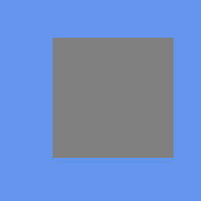
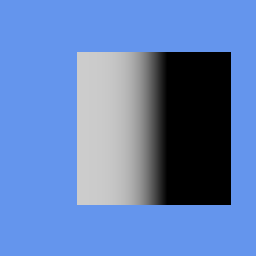

Tutorial 57: SkinnedEffect and Skeletal Animation
What you’ll learn
- Feeding a matrix palette to
SkinnedEffectwithSetBoneTransforms. - How per-vertex bone weights and indices drive the deformation.
- Loading clips from
SkinnedModelEXTand sampling them withComputeBoneTransformsEXT.
Before you start — Tutorial 35: Loading 3D Models (the bone hierarchy is part of Model) and Tutorial 33: Matrices and Transformations (bone transforms are matrices). The page notes renderer-specific behaviour on OPENGLES3. Requires a 3D-capable renderer such as OPENGLES3 or VULKAN; the eleven 2D-only renderers (SDL_RENDERER, DIRECT2D, CANVAS, HTML_DOM, SKIA, BLEND2D, FREEDIRECT, DIRECTX1, GDI, SVG_DOM, OPENVG) throw on 3D calls.
Renderer support: SkinnedEffect is one of CNA's stock effects, and the stock effects are a genuinely working path — entirely separate from compiled .fx bytecode, which no renderer supports. Coverage still varies by renderer: it is pixel-tested on OPENGLES3, and the eleven 2D-only renderers have no programmable pipeline and throw. Query GraphicsDevice::SupportsCapability(GraphicsCapability::ThreeD) before assuming, but read the caveat below — that query fails open on some renderers.
Skeletal animation (also called skinning) is the standard technique for animating character meshes. A skeleton of hierarchical bones drives the mesh: each vertex is bound to one or more bones with influence weights that sum to 1. At runtime, a matrix for each bone is computed and uploaded to the GPU, which transforms each vertex in the vertex shader using the weighted sum of its bound bone matrices. CNA's SkinnedEffect provides an XNA 4.0-compatible interface to this pipeline.
SkinnedEffect Overview
SkinnedEffect is a built-in effect that extends the basic per-vertex lighting model of BasicEffect with a skinning pass. The vertex shader accepts a palette of up to 72 bone matrices and, for each vertex, computes a weighted blend of the bone transforms:
// Simplified skinning in the vertex shader
vec4 skinnedPos = vec4(0.0);
for (int i = 0; i < WEIGHTS_PER_VERTEX; ++i) {
int boneIdx = int(a_blendIndices[i]);
float weight = a_blendWeights[i];
skinnedPos += u_bones[boneIdx] * vec4(a_position, 1.0) * weight;
}
gl_Position = u_viewProj * skinnedPos;The effect supports the same lighting properties as BasicEffect: up to three directional lights, per-vertex ambient, and optional fog. Texturing is single-texture with optional per-vertex colour.
SetBoneTransforms
SetBoneTransforms(const std::vector<Matrix>& boneTransforms) uploads the bone matrix palette to the GPU. The matrices should be in object space, incorporating the full chain of transforms from the root bone to each individual bone. It takes the palette as a whole vector rather than a pointer/count pair, and the size must not exceed SkinnedEffect::MaxBones, which is 72. CNA uploads them to a GLSL uniform array u_bones[72] via a UBO on OPENGLES3 or a descriptor set on Vulkan:
// Upload bone palette (typically called each frame in Update or Draw)
skinEffect_->SetBoneTransforms(boneXforms_);The vector must hold between 1 and 72 matrices. Passing more than 72 is a runtime error. The 72-bone limit matches XNA 4.0 and is sufficient for humanoid characters; complex creatures with more bones require splitting the mesh into multiple draw calls with separate palettes.
The bone matrices represent the skinning matrix for each bone, defined as:
// skinningMatrix[i] = inverseBindPose[i] * currentPoseWorldTransform[i]
// where inverseBindPose[i] transforms from model space to the bone's local space
// at the bind pose, and currentPoseWorldTransform[i] is the current animation pose
Matrix skinMatrix = model_->getInverseBindPose(i) * boneWorldTransform[i];Weights Per Vertex
The WeightsPerVertex property controls how many bone influences each vertex receives. Valid values are 1, 2, or 4 (the XNA 4.0 standard). More weights produce smoother deformation at joints (elbows, knees) at the cost of more GPU computation per vertex:
- 1 — "Rigid skinning". Each vertex is 100% controlled by a single bone. No blending, fastest. Suitable for robotic characters with hard joints.
- 2 — Two-bone blend. Good compromise for simple humanoids and most game characters.
- 4 — Four-bone blend. The standard for high-quality character animation. Required for smooth shoulder, wrist, and ankle deformation.
skinEffect_->setWeightsPerVertexProperty(4); // highest quality, typical for hero characters
skinEffect_->setWeightsPerVertexProperty(1); // fastest, use for distant crowd NPCsThe vertex buffer must use a matching vertex declaration. CNA provides VertexPositionNormalTextureSkin which carries position, normal, texture coordinates, a BlendIndices (packed four 8-bit bone indices as a Vector4), and a BlendWeights (Vector4 of normalised float weights).
Both axes, rendered by the real XNA runtime
The six frames below are from CNA's XNA oracle corpus (tools/xna-oracle/) — genuine Microsoft XNA 4.0 runtime output that CNA's DIRECTX9 renderer is diffed against at --tolerance 0. DIRECTX9 matches all 39 scenes at that tolerance; other renderers match far fewer, so “pixel-exact” is a DIRECTX9 statement, not a CNA-wide one. The test scene is a single skinned quad driven by a bone palette. Across the top row the weight count changes, which moves the quad because a different blend of bone transforms is applied to its vertices. The bottom row is the same three cases with PreferPerPixelLighting on: the flat shading of vertex lighting becomes a smooth gradient resolved per fragment.
One weight per vertex, vertex lighting — rigid skinning, uniform shading. Real XNA 4.0 output; CNA matches it pixel-for-pixel.
Two weights per vertex — blending a second bone moves the quad. Real XNA 4.0 output; CNA matches it pixel-for-pixel.

Four weights per vertex — the full palette blend lands the quad elsewhere again. Real XNA 4.0 output; CNA matches it pixel-for-pixel.
One weight, per-pixel lighting — same geometry, shading now varies across the face. Real XNA 4.0 output; CNA matches it pixel-for-pixel.

Two weights, per-pixel lighting. Real XNA 4.0 output; CNA matches it pixel-for-pixel.
Four weights, per-pixel lighting — the highest-quality combination. Real XNA 4.0 output; CNA matches it pixel-for-pixel.
Loading clips: SkinnedModelEXT, not Model
Animation lives on a different type than you might expect. Model — the XNA 4.0 type — carries a rigid per-mesh bone hierarchy and holds no clips at all. Per-vertex GPU skinning lives on SkinnedModelEXT, a CNA extension marked CNAEXT and deliberately not built on Model/ModelBone/ModelMesh. The content loader reads it from .skinnedmodel.json; plain Model reads .cnj, .gltf and .glb.
auto model = getContentProperty()
.Load<std::shared_ptr<SkinnedModelEXT>>("models/character");
// Clips is a plain map keyed by name -- iterate it, or index it directly.
for (const auto& [name, clip] : model->Clips) {
std::cout << name << " duration="
<< clip.Duration.getTotalSecondsProperty() << "s\n";
}Each AnimationClipEXT holds a Duration and a per-bone Tracks vector of keyframes; a bone with no track simply holds its bind pose. Alongside the clips, the model carries the skeleton itself — BoneCount, ParentBoneIndices, BindPoseLocal and InverseBindPoseGlobal.
Bone Hierarchy and Matrix Palette
Characters are animated by walking the bone tree each frame and accumulating the full world-space transform for each bone. The process is:
- Sample each bone's local transform at the current clip time (interpolate between keyframes).
- Walk the bone tree from root to leaves, multiplying each bone's local transform by its parent's accumulated world transform.
- Multiply each resulting world transform by the bone's inverse bind-pose matrix to produce the final skinning matrix.
- Upload all skinning matrices to
SkinnedEffectviaSetBoneTransforms().
SkinnedModelEXT::ComputeBoneTransformsEXT does steps 1–3 in one call. Note what it takes and what it gives back: a clip name (a key into Clips), a System::TimeSpan playback position, a loop flag, and an output vector that comes back already multiplied by each bone's InverseBindPoseGlobal — skinning-ready, straight into the effect.
std::vector<Matrix> bones;
model->ComputeBoneTransformsEXT("Walk", playbackPosition_, /*loop=*/true, bones);
skinEffect_->SetBoneTransforms(bones);For blending between two gaits, sample each clip into its own vector and interpolate. Matrix::Lerp is component-wise:
std::vector<Matrix> poseA, poseB;
model->ComputeBoneTransformsEXT("Walk", walkTime_, true, poseA);
model->ComputeBoneTransformsEXT("Run", runTime_, true, poseB);
std::vector<Matrix> poseBlend(poseA.size());
float blend = walkToRunFactor_; // 0 = walk, 1 = run
for (std::size_t i = 0; i < poseA.size(); ++i) {
poseBlend[i] = Matrix::Lerp(poseA[i], poseB[i], blend);
}
skinEffect_->SetBoneTransforms(poseBlend);Component-wise lerp holds up well for small angular differences between two similar gaits. Once the poses diverge much, decompose to translation/rotation/scale and use Quaternion::Slerp on the rotation instead — a lerped rotation matrix is not, in general, a rotation matrix.
If you would rather not drive playback position yourself, AnimationPlayer wraps the same machinery: construct it over the skinning data, call StartClip, then Update(time, relativeToCurrentTime, loop) each frame and feed GetSkinTransforms() into SetBoneTransforms.
SkinnedEffect on the EasyGL GL profiles
SkinnedEffect is pixel-tested on OPENGLES3. The five GL profile identities (OPENGLES2, OPENGLES3, OPENGL33, WEBGL1, WEBGL2) share one internal implementation, EasyGL, so the mechanics below are the same on all five — but the profiles are not interchangeable: OPENGLES2 and WEBGL1 genuinely lose instancing, MRT, occlusion queries and Texture3D, so an animated crowd built on instanced skinned meshes will not run on those two.
The uniform buffer holding SkinnedEffect::MaxBones (72) matrices is roughly 4.6 KB, which fits within the minimum uniform-block size guaranteed by the OpenGL ES 3.0 specification. On desktop OpenGL drivers it is uploaded through a GL_UNIFORM_BUFFER with a streaming hint and re-uploaded each frame.
Complete Example: Animated Character
#include "Microsoft/Xna/Framework/Graphics/SkinnedModelEXT.hpp"
#include "Microsoft/Xna/Framework/Graphics/SkinnedEffect.hpp"
#include "Microsoft/Xna/Framework/Graphics/ModelMeshPart.hpp"
class SkinnedGame final : public Game {
public:
SkinnedGame() : graphics_(this) {}
protected:
void LoadContent() override {
auto& gd = getGraphicsDeviceProperty();
// A skinned character is a SkinnedModelEXT, not a plain Model: it carries
// the skeleton (BoneCount / InverseBindPoseGlobal) and its Clips map.
model_ = getContentProperty().Load<std::shared_ptr<SkinnedModelEXT>>(
"models/character");
skinEffect_ = std::make_unique<SkinnedEffect>(gd);
skinEffect_->setWeightsPerVertexProperty(4);
// Lighting setup
skinEffect_->setAmbientLightColorProperty(Vector3(0.3f, 0.3f, 0.35f));
skinEffect_->DirectionalLight0.setEnabledProperty(true);
skinEffect_->DirectionalLight0.setDirectionProperty(
Vector3::Normalize(Vector3(0.5f, -1.0f, -0.7f)));
skinEffect_->DirectionalLight0.setDiffuseColorProperty(Vector3(1.0f, 0.9f, 0.8f));
// Texture (shared across all parts)
charTex_ = getContentProperty().Load<Texture2D>("textures/character_atlas");
skinEffect_->setTextureProperty(&charTex_);
// Clips live in the model, keyed by name. Sizing the palette to BoneCount
// is what SetBoneTransforms expects.
boneXforms_.resize(model_->BoneCount, Matrix::getIdentityProperty());
}
void Update(GameTime& gt) override {
float dt = (float)gt.getElapsedGameTimeProperty().getTotalSecondsProperty();
clipTime_ += dt;
auto kb = Keyboard::GetState();
if (kb.IsKeyDown(Keys::W)) isWalking_ = true;
if (kb.IsKeyDown(Keys::S)) isWalking_ = false;
// ComputeBoneTransformsEXT samples the clip and hands back matrices that
// are already multiplied by InverseBindPoseGlobal — ready for the palette.
// Passing loop = true wraps the position instead of clamping it.
model_->ComputeBoneTransformsEXT(
isWalking_ ? "Walk" : "Idle",
TimeSpan::FromSeconds(clipTime_),
/*loop=*/true,
boneXforms_);
skinEffect_->SetBoneTransforms(boneXforms_);
}
void Draw(const GameTime&) override {
auto& gd = getGraphicsDeviceProperty();
gd.Clear(Color::CornflowerBlue);
skinEffect_->setWorldProperty(Matrix::getIdentityProperty());
skinEffect_->setViewProperty(view_);
skinEffect_->setProjectionProperty(proj_);
// Draw every part of the model with the skinned effect
for (const auto& part : model_->Parts) {
gd.SetVertexBuffer(part.Part->getVertexBufferProperty());
gd.SetIndexBuffer(part.Part->getIndexBufferProperty());
for (auto& pass : skinEffect_->getCurrentTechniqueProperty()->getPassesProperty()) {
pass.Apply();
gd.DrawIndexedPrimitives(
PrimitiveType::TriangleList,
part.Part->getVertexOffsetProperty(), 0,
part.Part->getNumVerticesProperty(),
part.Part->getStartIndexProperty(),
part.Part->getPrimitiveCountProperty());
}
}
gd.Present();
}
private:
GraphicsDeviceManager graphics_;
std::shared_ptr<SkinnedModelEXT> model_;
std::unique_ptr<SkinnedEffect> skinEffect_;
Texture2D charTex_;
float clipTime_ = 0.0f;
bool isWalking_ = false;
std::vector<Matrix> boneXforms_;
Matrix view_ = Matrix::getIdentityProperty();
Matrix proj_ = Matrix::getIdentityProperty();
};